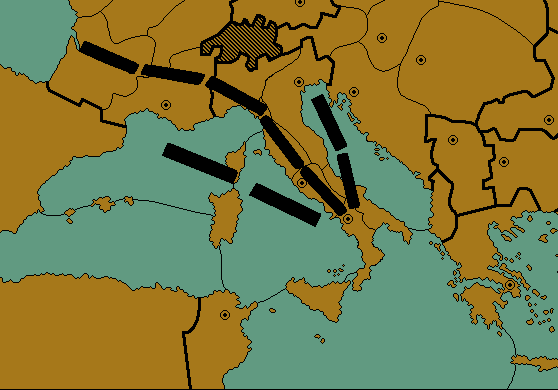

|
Sherlock Holmes,Aenigmatist |
|
“Watson,” Holmes continued, “I believe Herr Schweizer is being truthful. If the unit positions were written by the person I suspect, then he would only have needed to change three of Sir Owen’s unit positions, and Sir Owen’s word-play was a bit more polyglot and sophisticated than that contained in the text we have before us. The killer, thinking quickly, may have just hit upon the first obvious adaptation of Sir Owen’s riddle. You realize, Watson, what this means? Sir Owen's death was not accidental after all. My theory regarding the killer not being capable of solving Sir Owen's Diplomacy riddle is incorrect. Not only did he resolve it, but he had the presence of mind to alter it so as to point away from himself. The obvious conclusion is that the murder of dear Sir Owen was premeditated, and Herr Schweizer here was deliberately framed. Although we should have the proof soon enough, Watson, I put some questions to you. Which three unit positions were changed, and from what? Who was the true target of Sir Owen’s wit, and how would his unaltered puzzle have identified his killer?” As I pondered the conundrum, Holmes took the opportunity to sit down and refill his pipe, while Driscoll had Herr Schweizer sit down at one of the other tables. After a minute, I remarked to Holmes that nothing was coming to me. “Well, Watson,” Holmes continued, “You yourself mentioned that there was not too much room to move the pieces in the small Italian provinces. But not all of these units reside in small provinces, and even there, a small movement can make a significant difference. Shall I make things clearer?” “By all means,” I replied. “If you rely on me, we shall keep the Inspector waiting all day.” “Very well, Watson. Observe.” Holmes went to the board table and moved the units in Naples, the Ionian Sea, and Venice to Gascony, the Tyrrhenian Sea, and Apulia respectively, and adjusted some of the other pieces as well. Instead of an arrow pointing to Switzerland, Holmes had formed an arrow pointing in the other direction.  Looking over the board, Inspector Driscoll remarked, “Now you’ve got the arrow pointing at a southern Italian city.” “Yes, Inspector,” I replied. “Naples, to be precise.” “Well, Mr. Holmes?” Driscoll chortled. “Are you going to tell me that one of these Germans is really from Naples?” “Actually,” Holmes continued, “You are closer to the mark than you realize. Do you have any knowledge of the history of the Mediterranean, or of classical languages, Inspector?” Driscoll shook his head and said, “No, sir. The King’s English is good enough for me, and I never thought such bookishness had much practical value.” “In this case, Inspector, some knowledge of both would give you the answer in short order.” Holmes continued, “Watson, you have had the benefits of a well rounded education. Tell the Inspector something of early history of the city of Naples, particularly how the city was named.” I thought for a moment, remembering a particularly stern classics professor I had studied under, and said, “Naples, or ‘Napoli’, as it is called by the Italians, was not always an Italian city. Originally, the town was founded as a Greek colony. In fact, ‘Napoli’ is a corruption of the original Greek ‘Neapolis’, meaning ‘New City’." As Driscoll began to question the relevance of this information, Herr Schweizer, who had been quietly following the discussion, jumped up and exclaimed, “Gott sei dank! I have told you with this I have had nothing to do!” Holmes smiled, and said, “I believe Herr Schweizer has figured out the answer. So, I also believe, have you, Watson.” Indeed I had, after Holmes had led me straight to it. Driscoll, fighting down some annoyance, finally laughed and said, “Would one of you scholars please enlighten a simple, hardworking police inspector?” “Certainly, Inspector Driscoll.” Holmes continued. “Sir Owen was a rather well rounded fellow, and knew his Greek as well as his German. The killer, you see, is literally ‘from Neapolis’, or, as a German would say…” Taking a drag on his pipe, Holmes turned to Schweizer, who exclaimed, “Von Neustadt!” Holmes sat down, blew another smoke ring, and with a satisfied look on his face, quietly said, “Precisely.”
|